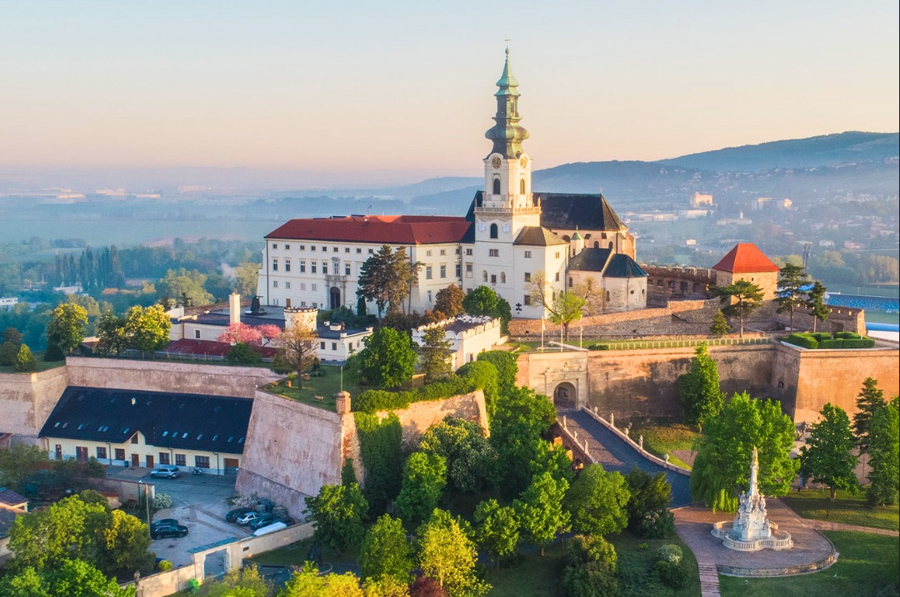

Kaviareň Luna vznikla v roku 2024 ako misto pre ľudí, ktorí majú radi dobrú a príjemnú atmosféru.
Kávu pripravujeme z čerstvo pražených zŕn a snažíme sa podporovať lokálnych dodávateľov.
Nájdeš nás v centre Nitry.
Informácie o meste nájdeš na stránke mesta Nitra.

Fiktívna kaviareň - školský projekt.